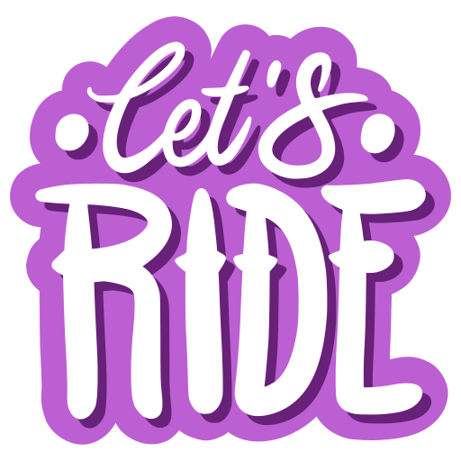

¡Hola! Bienvenido a mi sitio web. Mi nombre es Fernando Suárez y me gustaría contarte un poco acerca de mí.
Tengo 38 años, nací en Montería, Córdoba, pero he vivido la mayor parte de mi vida en Medellín. Aquí es donde me convertí en carpintero, una habilidad que aprendí de manera empírica, impulsado por el deseo de salir adelante y confiando en mi capacidad para lograrlo. Tengo una hermosa familia que me llena de ánimo y motivación para seguir avanzando. La tecnología representa un desafío para mí, ya que siempre he sido muy hábil con mis manos y mis talentos son más manuales. Sin embargo, estoy llevando mis habilidades al límite y no me cierro a nuevos conocimientos. Al contrario, me gusta conocerme mejor y descubrir de lo que soy capaz si me lo propongo.
De este proyecto de aprendizaje con Nodo, me encanta la posibilidad de estudiar durante un año y luego poder poner en práctica lo aprendido. Esto me parece súper práctico, especialmente para aquellos de nosotros que necesitamos ser más eficientes con nuestro tiempo y recursos económicos. Además, me motiva mucho tener el privilegio de aprender de personas tan talentosas en esta área, que desean ayudar y compartir su conocimiento con personas comunes como yo. Esta oportunidad de recibir orientación y conocimientos de expertos es invaluable y me impulsa a aprovechar al máximo esta experiencia de aprendizaje.
En este mundo de la programacion que es nuevo para mi todo el conocimiento que pueda obtener, va a ser de mucho valor ya que apenas estoy dando mis primeros pasos en este mar de cocnocimientos
Me gusta mucho conducir en carretera, disfrutar de la sensación de libertad y al final del viaje, llegar a un charco o río para relajarme y disfrutar del agua. También me encanta bucear en el mar, una actividad que me transporta y me calma.